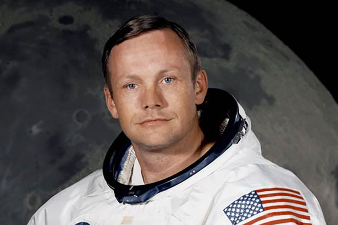
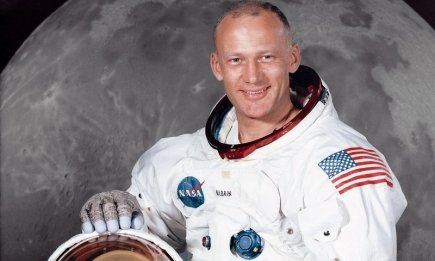
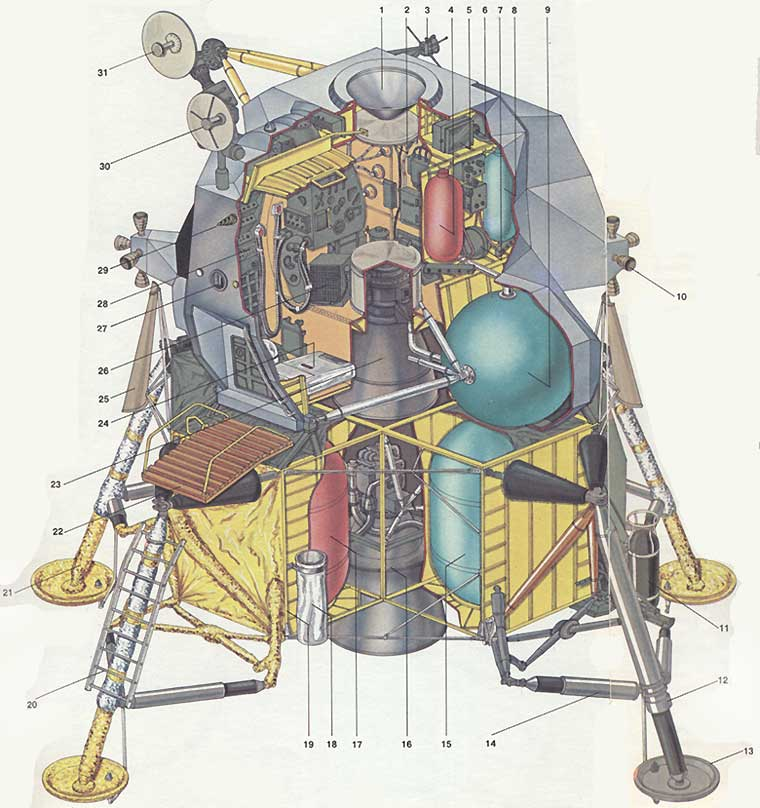

8д 3ч
Продолжительность
16–24 июля 1969 · Sea of Tranquility · NASA
Apollo 11 — кульминация космической эры: миллионы строк инженерных решений, часы решений под давлением и беспримерный коллективный труд человечества. В этом архиве собраны ключевые этапы миссии.
Ключевые параметры
Продолжительность
Члена экипажа
Место посадки
Ракета-носитель
Люди
Три астронавта, которые изменили историю человечества.

Командир корабля, совершил исторический первый шаг на Луне.

Провёл работы на поверхности Луны: сбор образцов, установка приборов.

Остался на орбите, обеспечивая связь и безопасность возвращения.
Фотоархив
Исторические кадры и схемы из публичных архивов NASA.



Радиопереговоры
«…120 секунд до посадки; высота 15 метров; скорость снижения контролируется экипажем; приоритет — безопасность посадки.»
Источник: стенограммы NASA (сокращённый фрагмент).
Хронология
Saturn V вывела корабль Apollo 11 на орбиту, начав путешествие к Луне.
Корректировка траектории и выход на транс-лунный курс.
Модуль «Орёл» отделился и совершил посадку в Море Спокойствия.
Нил Армстронг и Базз Олдрин провели историческую прогулку по Луне.
Команда приводнилась в Тихом океане. Миссия успешно завершена.